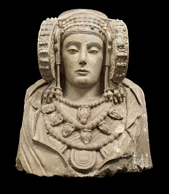
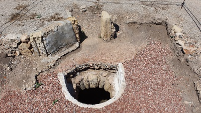
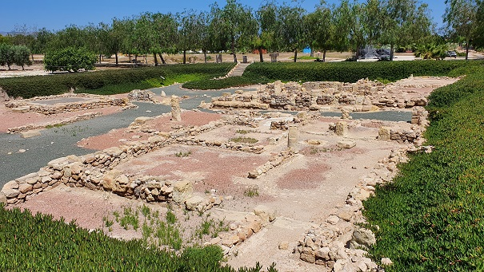
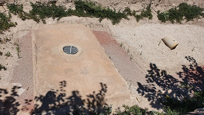
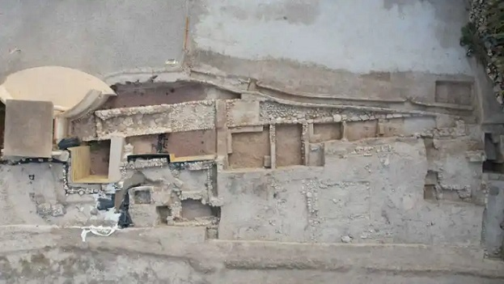
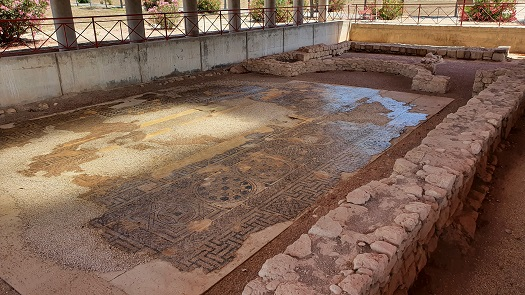
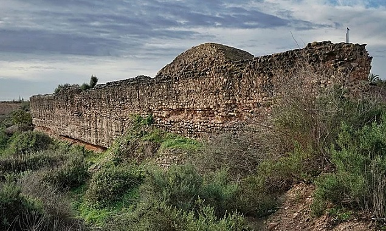

|
ILICI
|
|||||||||||||||||||||||||||
|
La colonia romana Iulia Ilici Augusta esta asentada en el denominado yacimiento de La Alcudia de Elche, ubicado en las cercanías de la ciudad de Elche, cerca del río Vinalopó, sobre una pequeña elevación. Su secuencia estratigráfica abarca unos dos mil quinientos años, desde mediados del segundo milenio a.e.c hasta los siglos IX-X. Al yacimiento se llega por la carretera de Elx-Dolores, el antiguo cardo de la centuriación romana de la ciudad de Ilici. El actual nombre del yacimiento proviene de los árabes, "Al-Kudia" por estar situado en una colina. Su emplazamiento permitía el acceso por
el río Vinalopó, que seria una vía de penetración natural hacia el interior y
por la vía que comunica el yacimiento con el denominado Portus ilicitanus. El
puerto se halla en el municipio de Santa Pola donde hace pocos años se podía
apreciar el muelle romano intacto.
La extensión de los vestigios conservados en el yacimiento es de unas 10 Ha. Los materiales proporcionados por los niveles ibéricos son de gran interés, especialmente la escultura monumental y la cerámica denominada de estilo Elche-Archena. De la escultura monumental las piezas más importantes halladas de la cultura ibérica son: Dama
Sedente
La Dama de Elche
 La cerámica del estilo llamado Elche-Archena, denominada así por los lugares de aparición de los primeros y más importantes monumentos, presenta un amplio elenco de seres más o menos fantásticos: figuras femeninas realistas o con cuerpo abotellado y por lo general aladas; con rostros felinos y aves de rapiña de identificación incierta, etc.
LA CIUDAD ROMANA La ciudad romana alcanzó en un momento avanzado el rango de colonia, tal y como documentan sus monedas. Las abreviaturas CCIA y CIIA que en ellas figuran han dado pie a las interpretaciones; que se tratara de una fundación cesariana, a la que corresponderían las siglas CCIA, eso si minoritarias, o bien augustea, que se identificaría con las siglas CIIA (Colonia Iulia Ilici Augusta), más abundantes. Algunos autores defienden la tesis de una doble fundación, una cesariana y otra augustea, que fue la que marcó la impronta definitiva de la ciudad. A través de la epigrafía conocemos su vinculación con algunos personajes célebres, como Titus Statilius Taurus, cónsul de Roma y gobernador de la provincia Hispania Citerior y a quien la ciudad distinguió con su nombramiento como su patrono.
La ciudad acuñó moneda desde época augustea, aunque no se descarta que anteriormente hubiese acuñado moneda. Se conocen seis emisiones monetarias, la última de la época de Tiberio. En la primera emisión de Augusto aparecen en el reverso insignias militares que aluden al origen de los colonos, en su mayoría veteranos del ejército. Uno de los tipos monetarios más conocidos es el que representa en el reverso un altar dedicado a Salus Augusta, quizás en relación con la figura de Livia, la esposa de Augusto. De la ciudad romana de Ilici conocemos varios edificios públicos importantes: dos termas, un templo a Juno documentado en las monedas y una basílica de culto cristiano, pero que algunos estudiosos consideran pudo haber sido primero una sinagoga, y también varias casas.
Accedemos al yacimiento a través del Centro de Interpretación.
Iniciamos la visita al yacimiento. Se conservan los restos de la muralla
de época romana que delimitaba la colonia por el oeste. De
la
muralla romana
lo que
se conserva es un lienzo de más de 60 m. de longitud con dos torres
adelantadas, de la que se tenían noticias desde el siglo XVII y que había sido excavado en la
última década del siglo XIX.
Continuamos por las denominadas casas ibéricas. Un conjunto residencial articulado por una calle con sentido este-oeste. Destaca la superposición de estructuras. Dtadas en los siglos II-I a.e.c. En una de sus dependencias apareció el conjunto de materiales que se exponen en la sala II del Museo bajo el rótulo de ‘la tienda’, pues se suponía que se trataba del almacén de un alfarero. En medio del espacio excavado, en el tramo más occidental, puede observarse la superposición estratigráfica de los niveles de época romana y tardoantigua.
En sus inmediaciones puede verse una boca de registro de alcantarillado perfectamente conservado, posteriormente reformado y reutilizado para reconducir aguas de regadío modernas.
 Continuamos por la domus del atrio, que conserva un peristilo y varias estructuras relacionadas con depósitos para el agua y zonas de servicio doméstico. Por debajo de las estructuras propiamente romanas ahora visibles, se encontraron niveles más antiguos. de camino hacia el museo, el camino discurre entre dos zonas excavadas. Al norte se encuentra un área con vestigios de excavaciones antiguas, llevadas a cabo en los años 1947 de las que existe poca información. Se trata de un área de viviendas tardoantiguas donde apareció un tesorillo que incluía monedas de oro de los emperadores Honorio y Arcadio, y una serie de joyas de la misma época.
La domus del peristilo está rodeada por un pórtico del que se conservan las basas estucadas de las columnas. Por los materiales y por la decoración parecen indicar que se edificaron en época alto-imperial, supuestamente sobre otras anteriores de época republicana y que estuvieron en uso hasta época tardo-imperial.
En las estructuras tardo-republicanas precedentes se encontraba el mosaico helenístico de Sailacos que constituye una de las piezas de mayor interés. Mosaico confeccionado con teselas cerámicas recortadas y guijarros que ofrece una coloración de blanco, rojo, negro y ocre, cuyo motivo central presenta un gran rosetón rodeado de inscripciones en ibérico realizadas con letras latinas y bordeado por una esquematización del amurallamiento de la ciudad.
Continuamos por el espacio central. Se contemplan vestigios de lo que tradicionalmente se ha venido identificando con el foro de Ilici, aunque en la actualidad se desestima esta interpretación. Lo que el visitante tiene a la vista corresponde a las últimas fases de ocupación de un cruce de calles romanas, templos, instalaciones domésticas e industriales.

El museo alberga la mayor parte de la colección de materiales procedentes de las excavaciones realizadas en La Alcudia. Como ejemplo el mosaico de Océano y Sailacos.
Continuamos por el aljibe de Venus. En dirección sur, un aljibe subterráneo de grandes proporciones, que pertenecería a una casa romana en cuyo interior se encontró la famosa escultura de la Venus de Ilici.

Continuamos hacia las termas orientales, tras bordear hacia el este la valla de una finca particular, se alcanza el conjunto termal. Destaca su excelente estado de conservación y las dimensiones de sus espacios. Son visibles algunas estancias con pavimento de mosaico, unas letrinas y un amplio espacio descubierto y porticado, en cuyo centro se excavó una natatio de grandes dimensiones y en perfecto estado de conservación. El edificio está datado en el siglo I y ha sido posible recuperar una secuencia estratigráfica que va desde niveles medievales hasta los vinculados a la fundación del edificio termal. Se ha conseguido documentar la continua reutilización del conjunto termal con varias fases superpuestas a las que se asocian remodelaciones internas, con nuevas dependencias que articulan de forma más compleja el espacio interno de las termas, y con reaprovechamientos de las estructuras en fases más modernas.
El conjunto termal
continúa hacia el este, al otro lado de la valla perimetral, lo que muestra
que el espacio urbano no se circunscribía a la zona elevada. No se encuentra con la presencia en este punto
de una muralla perimetral, por lo que parece probable que el conjunto se
construya adelantando y ampliando los límites del antiguo asentamiento augusteo.
La
cronología del edificio confirmaría el hecho de que durante el siglo
I la ciudad de Ilici experimentará un auge económico importante
frente al retroceso que se atestigua en otros yacimientos próximos
contemporáneos.
Continuamos hacia el sur se llega al monumento moderno que conmemora el descubrimiento de la Dama de Elche, actualmente conservada en el Museo Arqueológico Nacional de Madrid. A continuación, se puede observar la presencia de un tramo de la muralla en su zona meridional. Seguimos por las estructuras domésticas del sector suroriental y la reconstrucción del templo íbero.
 Vista aérea del yacimiento de La Alcudia. Universidad de Alicante
También destaca el edificio conocido tradicionalmente como basílica o sinagoga, como elemento de mayor interés destaca un mosaico polícromo decorado con escenas y rótulos judaizantes que hicieron pensar en su utilización como sinagoga. En este área se realizaron excavaciones hace algunos años y según los arqueólogos, se edificó sobre otro templo más antiguo de época ibérica. El mosaico que pavimenta la totalidad de la nave de la basílica. Está realizado en azul, blanco, rosa y amarillo, con tres inscripciones en azul sobre fondo blanco y con amarillo en el interior de las letras. Su decoración consta de tres grandes franjas longitudinales con ornamentos geométricos. Su cronología lo sitúa en la mitad del siglo IV.

En los alrededores de la ciudad se documentan una centuriación y numerosas villas alojadas en sus parcelas, varias de las cuales fueron excavadas en la segunda mitad del siglo XIX. Como la mayoría de las ciudades en el siglo III sufrió una grave crisis. La ciudad padeció los conflictos entre visigodos y bizantinos, cuya presencia se atestigua por un conjunto de materiales hallados. Su obispo Juan es citado a principios del siglo VI y otro, Serpentino, acudirá al IV Concilio de Toledo. La Alcudia también aparece mencionada junto con otras ciudades de su entorno en el Pacto de Teodomiro del año 713, como las que continúan perteneciendo a este noble visigodo, tras su acuerdo con los nuevos dominadores de religión musulmana. En Mayo de 2017, sale a la luz un segundo conjunto de termas romanas. Las nuevas termas, mucho más grandes y lujosas, muestras sus espacios bien definidos y revelan el auge de Illici en el siglo I como capital. En ellas se ha encontrado un mosaico polícromo y cinco piezas con grafitos. A este descubrimiento se suman lucernas, monedas, vidrios, fragmentos de pintura y otras piezas. Los investigadores han detectado un crecimiento de la población y de la ciudad de Illici. Más info: www.laalcudia.ua.es
En la ciudad de Elche ha aparecido más restos de época romana. En 2008 aparecieron restos cerámicos de época romana en la excavación arqueológica del Clot de Galvany, datados entre los siglos I a.e.c y el III. Las excavaciones en el Mercado Central de Elche, 2017, esconden restos de época romana y enterramientos islámicos. Se han recuperado fragmentos de cerámica romana de entre los siglos I a V. Los arqueólogos opinan que estos hallazgos romanos aislados constituyen uno de los pocos testimonios que han perdurado sobre la existencia de una villa romana que habría desaparecido con la llegada de los árabes y su desarrollo urbano. En septiembre de 2020, en la cuarta campaña de excavación, se está consolidando y restaurando el lienzo de muralla ibérica mejor conservado. En mayo de 2024,
hallan la gran ciudad de la Dama de Elche: desvela cómo era la sociedad
íbera de hace 2.500 años En diciembre de 2025, el equipo de investigadores ha logrado identificar la puerta suroeste de la antigua ciudad, un hallazgo que cambia la idea que se tenía sobre su urbanismo, su sistema defensivo y su relación con el territorio. Descubren que una gran la presa del Azud de Argamasa, de Elche, que se creía islámica es de origen romano. construida sobre el río Vinalopó, el estudio de la UA data la construcción del Azud de la Argamasa entre los siglos I a.e.c. y I. Más de 130m de largo y 4m de alto. Foto: Índigo Rodhes

|
|||||||||||||||||||||||||||